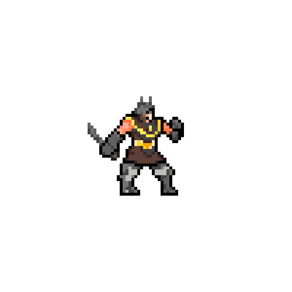
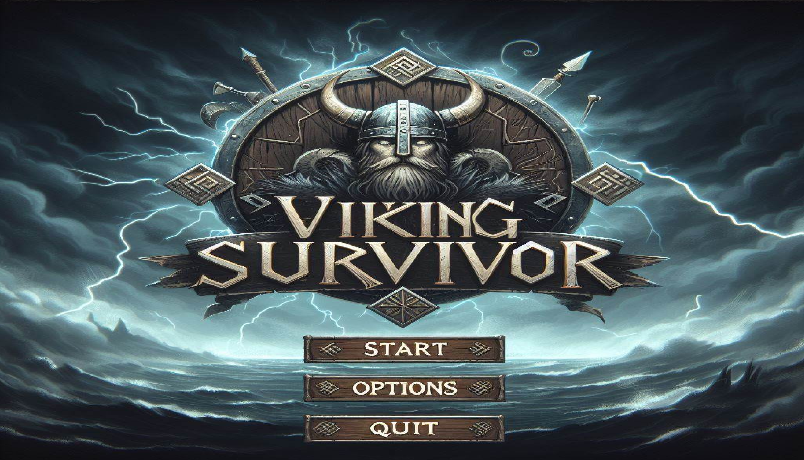
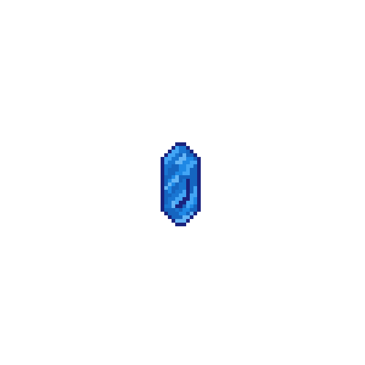
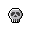

Om spillet
"Viking Vidar" har blitt etterlatt i England, og må forsvare seg selv mot horder av engelskmenn og andre unaturlige skapninger - Vidar sin skjebne er satt i stein, og steinen faller mot Valhalla, det eneste spørsmålet er hvor sterk kan Vidar bli før han skal møte Odin.
Egenskaper
- Default attack: Vidar kaster knivene sine mot fiender som nærmer seg. Disse blir automatisk kastet
- Skull power-up: Dersom Vidar plukker opp en "skull" vil han slå villt rundt seg med knivene og drepe alle som kommer i nærheten av han.
- XP og HP power-ups: Dersom Vidar plukker opp en HP-pickup vil han heale en viss andel HP. Hvis Vidar samler opp nok XP-pickups vil han etterhvert "level up". For hver level blir Vidar sterkere
Karakteren Vidar
 Pickups
 Controls
- [W, A, S, D] for spiller bevegelse, og UI navigering
- Mus for UI navigering
- [Esc] for å avslutte spillet
Authors
- Haakon Osmundsen Benning
- Eilif Eilifsen
- Hallvard Stensrud Hardang
- Ingmar Aarsland Forsberg
- Andreas Mærland